North of the Border Tour
Great Escape La Ronde Canadas Wonderland Michigans Adventure Six Flags Great America Kings Island Kennywood Knoebels Dorney Park
Unfortunetly, this is our last park on the trip.
Here's a looka at what we'll be doing today.
 While I was worried about the rain after seeing the weather report and this sign, I was happy to know that the rain did not ruin my time at Dorney. (It did screw up my flight though.)
While I was worried about the rain after seeing the weather report and this sign, I was happy to know that the rain did not ruin my time at Dorney. (It did screw up my flight though.)
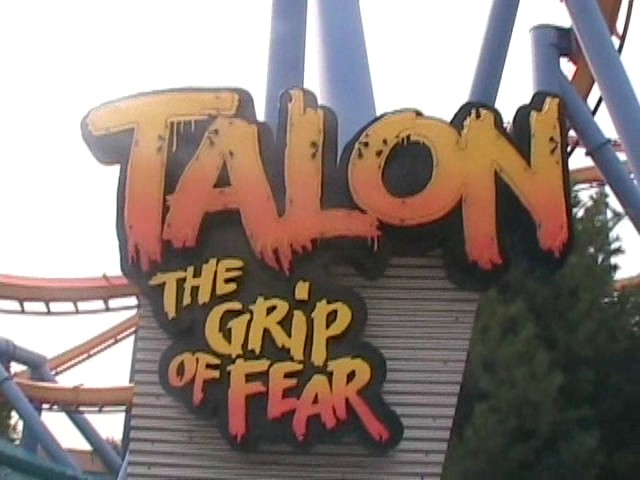
First ride of the day, Talon.
 Honestly, I don't know how people came up with the idea that this coaster is badass.
Honestly, I don't know how people came up with the idea that this coaster is badass.
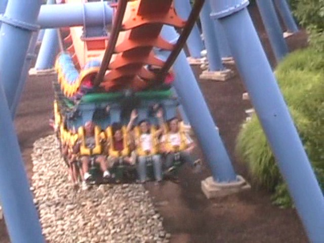
This ride is basically Silver Bullet's Eastern Sister.
 It is a fun ride though. No doubt about that.
It is a fun ride though. No doubt about that.
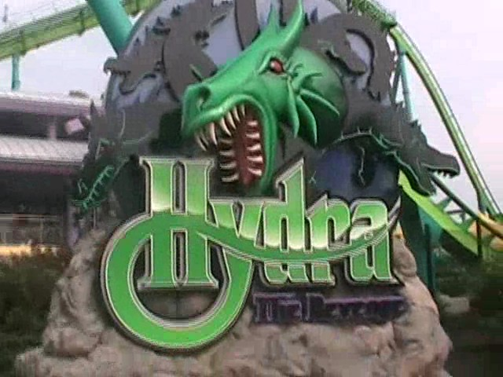
Next up was Hydra.
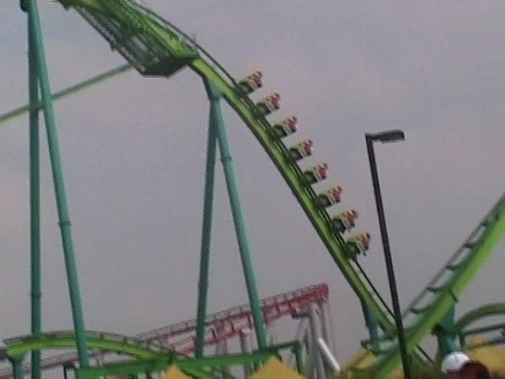
This ride was suprisingly great and awsome.
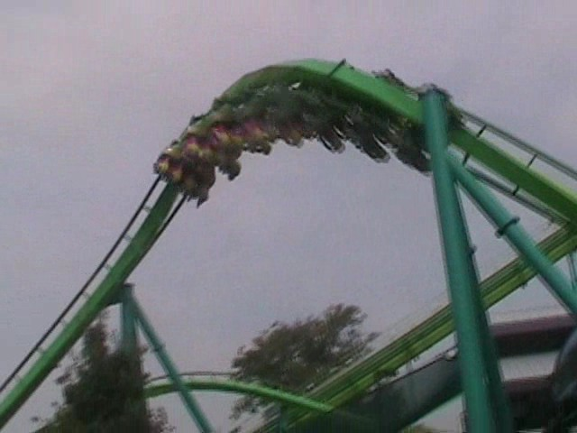
I really think everyone confuses Hydra with Talon as this ride is great.
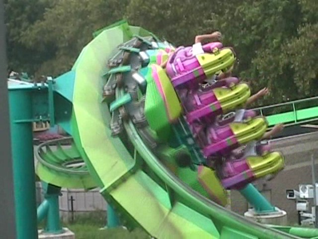
BEST ELEMENT ON A COASTER EVER!!!! NUFF SAID!!!!
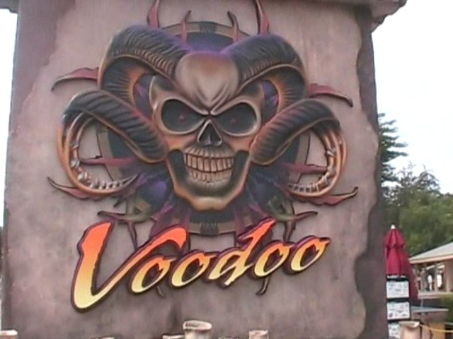
Hello Steel Venom. Don't think I haven't forgotten about you.
I have finally gotten that other Geauga Lake Credit. And that completes the Geauga Lake Credits.
Oh Yeah. Voodoo was awsome.
 Up next is Steel Force.
Up next is Steel Force.
 This and a certain blue overrated coaster have a terrible thing in common.
This and a certain blue overrated coaster have a terrible thing in common.
 It's not that they both have weak airtime hills.
It's not that they both have weak airtime hills.
 And it's not the fact that they both exceed over 200 feet.
And it's not the fact that they both exceed over 200 feet.
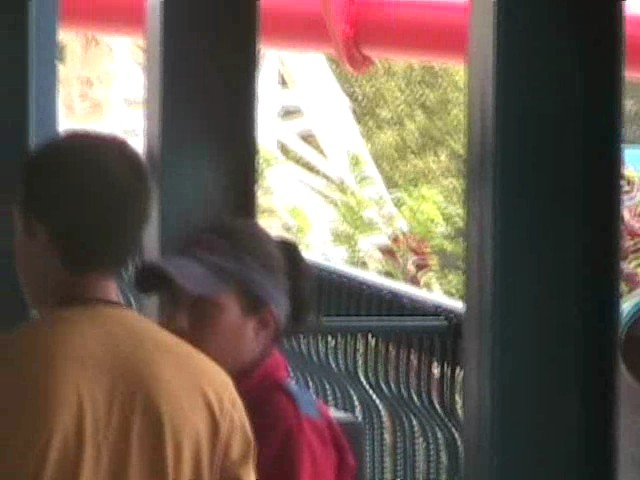
It's that they both have Evil Ride Operators. The Steel Force Ride Operator, (AKA Christina), is only slightly better than the Millenium Force Ride Operator. And Honestly, you're a terrible and evil ride operator if you come anywhere close to the Millenium Force Ride Operator's wrath. So being only *slightly* better really shows that she is a nasty bitch.
"Oh Millenium Force Ride Operator, I miss you so much. I'm currently fu*king with this jackass teenager you fu*ked with last year. I really love seeing the anger in his eyes when he hears my nasty nasty voice. I was wondering if you had any ideas on coming up with bulls*it rules for this guy to break so he can be ejected from my land of Dorney Park. His confusion and anger would be so priceless to me. Oh I just wish I could eject that little bastard out of here right now! You really need to get away from Cedar Point and come to Dorney Park. If we combine our evil together, than we can truely make Dorney Park the most misreble place on earth!!!"
While this time I tried to Stand up to the Steel Force Ride Operator, I just got knocked down. Everyone else that tried to stand up for me also got knocked down.
 Ok, let's try and get onto something positive and get on Laser.
Ok, let's try and get onto something positive and get on Laser.
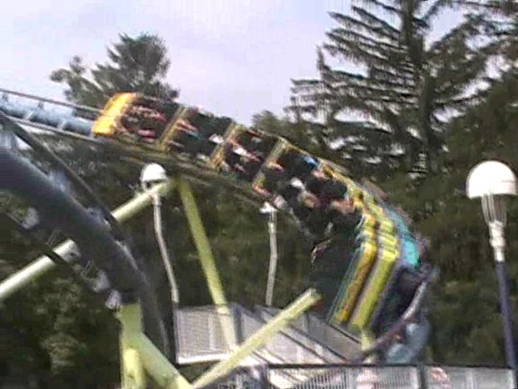
It was alot like what Scorpian would be like if it had two loops and more force.
 It's a shame this is Laser's last year. There are lot of other things at Dorney Park that should go besides Laser.
It's a shame this is Laser's last year. There are lot of other things at Dorney Park that should go besides Laser.
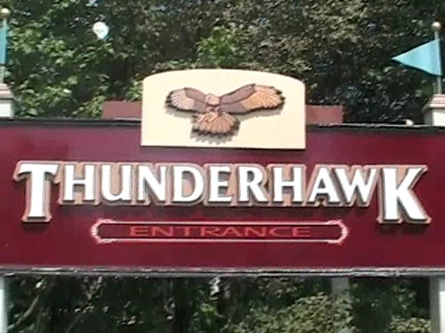
Up next was Thunderhawk.
 Thunderhawk is a very strange woodie.
Thunderhawk is a very strange woodie.
 It seems like the ride used to be good until it got raped by useless trims.
It seems like the ride used to be good until it got raped by useless trims.
Although I didn't ride it, the S&S Towers @ Dorney do look good.
Ok. So I can go up to Geauga Lake's grave, stick this ticket in the grave, and a hot dog will pop out of it's grave? Awsome!
 I just know Cody is dreaming of soaking himself from White Water Landing. Just look at that splash. (Oh yeah, I rode that.)
I just know Cody is dreaming of soaking himself from White Water Landing. Just look at that splash. (Oh yeah, I rode that.)
While drying off, we decided to get the final credit at the park.
 It just wasn't a good Wild Mouse. There's a much better Wild Mouse just 60 miles away at Hersheypark.
It just wasn't a good Wild Mouse. There's a much better Wild Mouse just 60 miles away at Hersheypark.
We rode the one at Kennywood. We don't need to do two of these in the same trip.
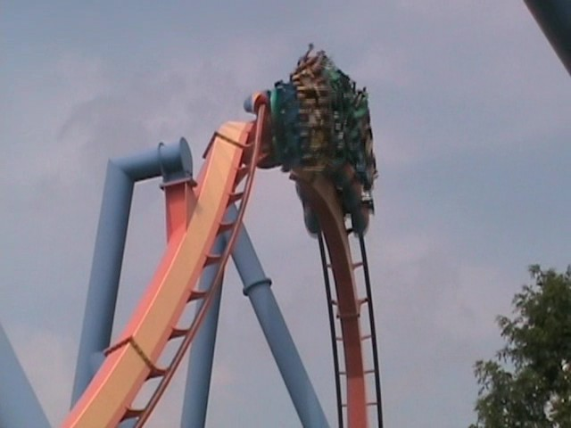
We tried riding Talon in the middle to see if it was any better. While it's better in the middle, It's just not that badass ride many claim it is.
 So we decided to get our final ride of the day on the underrated and unique Hydra.
So we decided to get our final ride of the day on the underrated and unique Hydra.
 Honestly, This ride is just so unique that it's just awsome. Scream, Medusa, and Dominator arn't anything like this.
Honestly, This ride is just so unique that it's just awsome. Scream, Medusa, and Dominator arn't anything like this.
 I still love that element and wish more coasters would have it.
I still love that element and wish more coasters would have it.
And this trip ended by spending the night at the Chicago O'Hare Airport. While there a few bad moments on the trip, (Steel Force Ride Operators), Most of this trip was just amazing with amazing rides and amazing people. This trip was just so great and I hope to do another trip soon.
Home